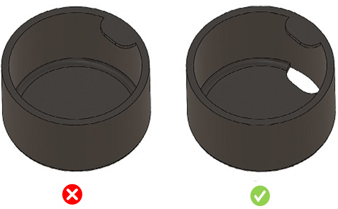

製造を容易にするため、アンダーカットは避けてください。
アンダーカットは通常、追加の機構を必要とし、金型コストや構造の複雑さを増加させます。また、部品には変形やたわみのための余裕が必要です。
一般的に、アンダーカットは避けるべきです。工夫された部品設計やわずかな設計上の配慮により、アンダーカットに対する複雑な機構を不要にすることができます。

注記:
フィレットにおいて、可視面積が大きく、そのうちごく一部（10%未満）の領域のみがアンダーカットとして示される場合、本ルールはその領域をアンダーカットとして検出しません。
これは、実際の製造では、そのような小さなアンダーカット面はエジェクタピンによって排出可能であり、側方動作（サイドアクション）を必要としないためです。